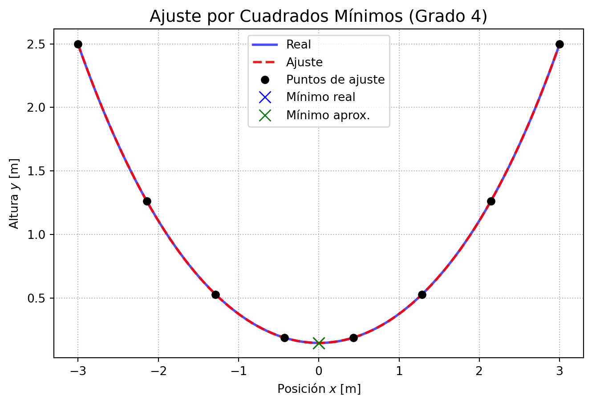

Trabajo Práctico: Análisis en Coordenadas Toroidales
Definición del Problema
Una soga de longitud \(L\) se encuentra atada a dos postes a una altura \(h\), con sus centros separados entre sí una cierta distancia \(2a\), como muestra la figura. Considerando un sistema de coordenadas cartesianas en el cual el eje \(x\) se sitúa paralelo al suelo y el eje \(y\) se encuentra exactamente a igual distancia de ambos postes, se puede describir cada punto de la soga mediante la siguiente ecuación:
\[ y(x) = \frac{1}{\gamma} \left( \cosh(\gamma x) - \cosh(\gamma a) \right) + h \],
donde \(x\), \(y\), \(a\) están en metros, y \(\gamma\) es un parámetro cuyo valor es positivo y cumple la siguiente ecuación:
\[ L = \frac{2}{\gamma} \sinh(\gamma a) \]
(a) Punto mínimo de la soga
Note
Si \(L=8 m\), \(a=3m\) y \(h=2,5m\), grafique los puntos de la soga y determine a qué altura se encuentra el punto más bajo de la misma.
Reemplazando los valores dado en la expresión de \(L\) se obtiene la siguiente ecuación para \(\gamma\):
\[ 8 = \frac{2}{\gamma} \sinh(3\gamma) \]
De esta expresión no podemos simplemente despejar\(\gamma\), sino que debemos resolverla numéricamente. Para esto, podemos reescribirla como una función igualada a cero y luego utilizar un método de búsqueda de raíces para encontrar el valor de \(\gamma\) que satisface la ecuación:
\[ f(\gamma) = \sinh(3\gamma) - 4\gamma = 0 \]
En este caso se utiliza el método de Newton-Raphson para en encontrar la raíz de esta función, lo que nos dará el valor de \(\gamma\) que necesitamos para calcular la altura del punto más bajo de la soga. Luego, con el valor de \(\gamma\) calculado, podemos usar la ecuación de \(y(x)\) para encontrar la altura mínima en el punto \(x=0\). Finalmente, se generan los puntos necesarios para graficar la forma de la soga y se muestra la gráfica resultante.
Resolviendo Newton-Raphson para encontrar \(\gamma\)
El método encuentra las raíces de una función iterativamente utilizando la fórmula:
import numpy as np# Parámetros dadosL =8.0a =3.0h =2.5# Definición de la función y su derivadadef f(gamma):return np.sinh(3* gamma) -4* gammadef df(gamma):return3* np.cosh(3* gamma) -4# Implementación del Método de Newton-Raphsondef newton_raphson(func, dfunc, x0, tol=1e-6, max_iter=20): x_n = x0print(f"{'Iteración':<10} | {'gamma_n':<15} | {'f(gamma_n)':<15}")print("-"*45)for n inrange(max_iter): f_val = func(x_n)# Criterio de paradaifabs(f_val) < tol:print("-"*45)print(f"Convergencia alcanzada en {n} iteraciones.")return x_n df_val = dfunc(x_n)# Por si la derivada llega a ser ceroif df_val ==0:print("Error: La derivada es cero")returnNoneprint(f"{n:<10} | {x_n:<15.8f} | {f_val:<15.8e}")# iteración de Newton x_n = x_n - f_val / df_valprint("Se alcanzó el número máximo de iteraciones sin converger.")return x_ngamma_inicial =0.5gamma_calculado = newton_raphson(f, df, gamma_inicial)print(f"\nValor final de gamma calculado: {gamma_calculado:.8f}")
Iteración | gamma_n | f(gamma_n)
---------------------------------------------
0 | 0.50000000 | 1.29279455e-01
1 | 0.45771352 | 1.63554910e-02
2 | 0.45060725 | 4.16393909e-04
---------------------------------------------
Convergencia alcanzada en 3 iteraciones.
Valor final de gamma calculado: 0.45041667
Como el problema de la soga es simétrico respecto al eje \(y\), el punto más bajo se encuentra en \(x=0\). Por lo tanto, para calcular la altura mínima de la soga, simplemente evaluamos \(y(0)\) usando el valor de \(\gamma\) que acabamos de calcular:
\[ y_{min} = y(0) = \frac{1}{\gamma} \left( \cosh(0) - \cosh(\gamma a) \right) + h = \frac{1}{\gamma} (1 - \cosh(\gamma a)) + h \]
\[ L = \left[ \frac{1}{\gamma} \sinh(\gamma x) \right]_{-a}^{a} = \frac{1}{\gamma} \left( \sinh(\gamma a) - \sinh(-\gamma a) \right) \]
El seno hiperbólico es una función impar, por lo que \(\sinh(-z) = -\sinh(z)\), lo que nos permite simplificar la expresión a:
\[ L = \frac{2}{\gamma} \sinh(\gamma a) \]
Esta es la misma exṕresión que teníamos inicialmente.
Podemos realizar la integración numérica utilizando el Método de Simpson 1/3 para verificar que el resultado coincide con \(L=8m\).Para este método es necesario evaluar la función integrando en varios puntos dentro del intervalo de integración, y luego aplicar la fórmula de Simpson para obtener una aproximación de la integral:
def integrando(x):return np.cosh(gamma_calculado * x)# Implementación del Método de Simpson 1/3def simpson_13(func, lim_inf, lim_sup, n_intervalos):if n_intervalos %2!=0:raiseValueError("El número de intervalos debe ser par para Simpson 1/3.") h = (lim_sup - lim_inf) / n_intervalos x = np.linspace(lim_inf, lim_sup, n_intervalos +1) y = func(x)# Aplicamos la fórmula: (h/3) * (y0 + 4*(y_impares) + 2*(y_pares) + yn) extremos = y[0] + y[-1]# Términos impares pares =4* np.sum(y[1:-1:2])# Términos pares impares =2* np.sum(y[2:-2:2]) integral = (h /3) * (extremos + pares + impares)return integraln =50longitud_calculada = simpson_13(integrando, -a, a, n)print(f"Longitud de la soga mediante integración numérica (Simpson): {longitud_calculada:.8f} m")print(f"Longitud teórica esperada: 8.00000000 m")print(f"Error absoluto: {abs(8.0- longitud_calculada):.2e} m")
Longitud de la soga mediante integración numérica (Simpson): 8.00000169 m
Longitud teórica esperada: 8.00000000 m
Error absoluto: 1.69e-06 m
(c) Ajuste de polinomio
Note
Tomando 8 puntos igualmente espaciados sobre el eje \(x\), considerando los extremos de la soga, obtenga el polinomio de grado menor o igual a 4 que mejor ajusta esos puntos de la soga en el sentido de cuadrados mínimos. Calcule el error que se comente con este ajuste al determinar el punto más bajo de la soga.
El objetivo será encontrar un polinomio de como máximo grado 4 de la forma:
Tenemos un conjunto \(m=8\) de puntos \((x_i, y_i)\), por lo que tenemos 8 ecuaciones y 5 incógnitas (\(c = [c_0, c_1, c_2, c_3, c_4]^T\)). Esto nos da un sistema sobredeterminado, el cual se puede resolver utilizando el método de mínimos cuadrados. Para esto, se construye la matriz de diseño \(A\) y el vector de observaciones \(Y\):
Para convertir el sistema sobredeterminado \(A c = y\) en un sistema compatible, se multiplica ambos lados por la transpuesta de \(A\), lo que lo convierte en un sistema cuadrado de \(5x5\):
\[ \left( A^T A \right) c = A^T y \]
El sistema resultante se puede resolver utilizando métodos de álgebra lineal para encontrar los coeficientes del polinomio \(P_4(x)\) que mejor ajusta los puntos de la soga en el sentido de mínimos cuadrados. Luego, con el polinomio ajustado, se puede calcular la altura del punto más bajo de la soga evaluando \(P_4(0)\) y comparándola con el valor real obtenido anteriormente para determinar el error cometido por el ajuste.
En este caso se utiliza el método de numpy.linalg.solve.
Coeficientes del polinomio P4(x):
c0 = 0.145821
c1 = -0.000000
c2 = 0.224066
c3 = 0.000000
c4 = 0.004167
Altura mínima real de la soga: 0.145328 m
Altura mínima aproximada P4(0): 0.145821 m
Error absoluto en la aproximación: 4.922001e-04 m

(d) Separación máxima
Note
¿A partir de qué distancia de separación entre postes la soga comienza a tocar el suelo? Calcule la distancia con un error menor a \(1mm\).
Para resolver a qué distancia la soga toca el suelo, tenemos dos ecuaciones que deben cumplirse simultáneamente en el estado límite:
Longitud de la soga:\[ \frac{2}{\gamma}\sinh(\gamma a) = L \rightarrow \sinh(\gamma a) = \frac{L}{2}\gamma \]
Altura mínima nula:\[ \frac{1}{\gamma} (1 - \cosh(\gamma a)) + h = 0 \rightarrow \cosh(\gamma a) = 1 + h\gamma \]
Elevando al cuadrado ambas ecuaciones y sumando:
\[ \sinh^2(\gamma a) + \cosh^2(\gamma a) = (1 + h\gamma)^2 + \left(\frac{L}{2}\gamma\right)^2 \]
Nuevamente, por la identidad fundamental de las funciones hiperbólicas:
Ahora resta encontrar el valor de \(a\) que corresponde a este \(\gamma_{limite}\) utilizando la ecuación de la altura mínima y buscamos la raíz de la siguiente función:
Como debemos encontrar esta solución con un error mínimo a \(1mm\), y teniendo en cuenta nuevamnete la simétrico con respecto al \(x=0\), el margen de error para \(a\) es de \(0,001/2 = 0,0005 m\).
Podemos usar el método de la bisección para encontrar el valor de \(a\) que satisface esta ecuación con la tolerancia requerida. Para esto, es necesario elegir un intervalo inicial que contenga la raíz (es esperable que esté en el intervalo \([1,0; 3,0]\)), y luego iterar hasta que el error máximo del intervalo sea menor a \(0,0005 m\).
Code
def f_a(a):return np.cosh(gamma_limite * a) - (1+ h * gamma_limite)# Implementación del Método de Biseccióndef biseccion(func, lim_inf, lim_sup, tol_error): a_n = lim_inf b_n = lim_sup n =0print(f"{'Iter':<5} | {'Extremo Izq':<12} | {'Extremo Der':<12} | {'Medio (a_aprox)':<15} | {'Error Maximo':<15}")print("-"*68)# El ciclo continúa mientras el error máximo del intervalo sea mayor a la toleranciawhile (b_n - a_n) /2.0> tol_error: c_n = (a_n + b_n) /2.0 error_actual = (b_n - a_n) /2.0print(f"{n:<5} | {a_n:<12.6f} | {b_n:<12.6f} | {c_n:<15.6f} | {error_actual:<15.6f}")# Evaluamos el punto medioif func(c_n) ==0:return c_n # Encontramos la raíz exacta de casualidadelif func(lim_inf) * func(c_n) <0: b_n = c_n # La raíz está en la mitad izquierdaelse: a_n = c_n # La raíz está en la mitad derecha n +=1# Calculamos el valor final que cumple la tolerancia c_final = (a_n + b_n) /2.0 error_final = (b_n - a_n) /2.0print(f"{n:<5} | {a_n:<12.6f} | {b_n:<12.6f} | {c_final:<15.6f} | {error_final:<15.6f}")return c_finaltolerancia =0.0005a_calculado = biseccion(f_a, 1.0, 3.0, tolerancia)distancia_total =2* a_calculadoprint("-"*68)print(f"Distancia del centro al poste (a): {a_calculado:.4f} m")print(f"Separación total entre postes (2a): {distancia_total:.4f} m")